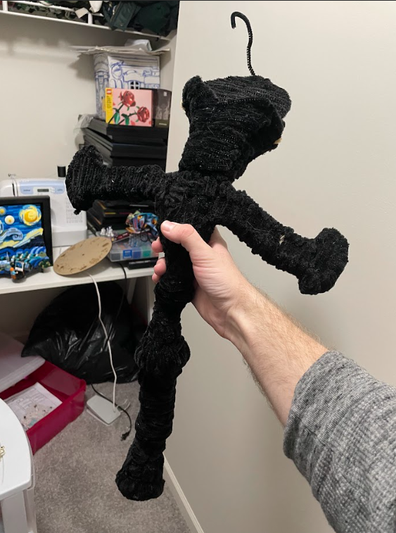

Hi there, I'm Dakota Hurlburt and when I'm not actively learning information science you can find me in way too many hobbies for my
own good.
My first and main hobby is video editing where I make videos based on gaming sessions I have with me and my friends, video essays
I put together about various topics of interest I want to take a deeper dive into, and sometimes little smaller edits where I take
audio and splice over it with memes or jokes that I've seen online or on social media that I can put into a quick video after I get
off from work.

My secondary hobby is pipe cleaner art, I love making little creations out of pipe cleaners as it's a good way to destress from hard
and confusing homework/occupational work I have to do. I've made many characters from TV shows like from Spongebob, I make
several outfit pieces from games I'm interested in, and I also just make little pipe cleaner things to make objects better
that I use on a daily basis. Also, I have been working on a sword from Fire Emblem, one of my favorite games that is currently
a work in progress.
My final hobby I try to balance is cosplay, or basically character costume creation. It is one of the harder hobbies I've undertaken
as sewing can be a large undertaking, but it has been fun to try (and many times fail) at learning how to make outfits only
from sewing patterns. The more fun part to me is getting to work with foam, heat guns, and copious amounts of glue
to get an outfit all together for conventions. Which, getting to make someones day by being their favorite character
makes all those barely sleeped nights worth it!